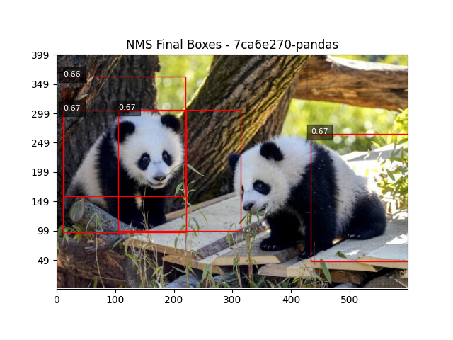

Anchor-Based Encoding

Objective
Implement anchor-based encoding by labeling each patch location and anchor shape based on how well it matches the ground truth boxes.
Setup
- Use predefined anchor shapes (e.g., [[1, 1], [2, 1], [1, 2]]) provided in a JSON file
- At each patch center, generate anchor boxes based on the anchor shapes and patch size
Implementation Details
def compute_iou(box1, box2):
"""
Computes Intersection-over-Union (IoU) between two bounding boxes.
"""
# Extract box coordinates
x1_center, y1_center, w1, h1 = box1
x2_center, y2_center, w2, h2 = box2
# Calculate the half-widths and half-heights
half_w1, half_h1 = w1 / 2, h1 / 2
half_w2, half_h2 = w2 / 2, h2 / 2
# Calculate the top-left and bottom-right corners of each box
x1_min, y1_min = x1_center - half_w1, y1_center - half_h1
x1_max, y1_max = x1_center + half_w1, y1_center + half_h1
x2_min, y2_min = x2_center - half_w2, y2_center - half_h2
x2_max, y2_max = x2_center + half_w2, y2_center + half_h2
# Calculate the intersection area
x_intersection = max(0, min(x1_max, x2_max) - max(x1_min, x2_min))
y_intersection = max(0, min(y1_max, y2_max) - max(y1_min, y2_min))
intersection_area = x_intersection * y_intersection
# Calculate the union area
box1_area = w1 * h1
box2_area = w2 * h2
union_area = box1_area + box2_area - intersection_area
# Calculate IoU
if union_area == 0:
return 0.0
iou = intersection_area / union_area
return ioudef match_anchors_to_ground_truth(resized_boxes, grid, anchor_shape):
"""
Matches anchors to ground truth boxes and generates supervision tensors.
"""
# Initialize output tensors and best IoU tracker
existence = np.zeros((GRID_NUMBER, GRID_NUMBER, 2))
location = np.zeros((GRID_NUMBER, GRID_NUMBER, 4))
best_iou_map = np.zeros((GRID_NUMBER, GRID_NUMBER))
ws, hs = anchor_shape
# Set all patches to background by default
existence[:, :, 1] = 1
# Iterate through each ground truth box and patch grid cell
for gt in resized_boxes:
for i, j, x_center, y_center, _, _ in grid:
# Create anchor box with the specified shape at this patch center
anchor_w = PATCH_SIZE * ws
anchor_h = PATCH_SIZE * hs
anchor_box = [x_center, y_center, anchor_w, anchor_h]
# Compute IoU between anchor and ground truth box
iou = compute_iou(anchor_box, gt)
# If this anchor has better IoU than previous ones at this location
if iou > best_iou_map[j, i]:
best_iou_map[j, i] = iou
# If there's any overlap (IoU > 0)
if iou > 0:
# Mark as positive example
existence[j, i, 0] = 1
existence[j, i, 1] = 0
# Calculate offsets (dx, dy, dw, dh) from anchor to ground truth
gt_x, gt_y, gt_w, gt_h = gt
# Encode the offsets
dx = gt_x - x_center
dy = gt_y - y_center
dw = gt_w - anchor_w
dh = gt_h - anchor_h
# Store the offsets in the location tensor
location[j, i] = [dx, dy, dw, dh]
return existence, locationProcess
- For each image:
- Resize image and GT boxes to 200x200
- Compute the patch grid (40x40 patches of size 5x5)
- For each anchor shape and each patch:
- Place an anchor box at the patch center
- Compute IoU between the anchor and all GT boxes
- Track the best IoU for each location
- If the current anchor has the best IoU and is greater than zero:
- Set Existence[row, col] = [1, 0]
- Encode the GT box as offsets [dx, dy, dw, dh] from the anchor box
- Otherwise, set Existence[row, col] = [0, 1]
Output
- One pair of tensors per anchor shape per image:
- Existence tensor: (GRID_NUMBER, GRID_NUMBER, 2)
- Location tensor: (GRID_NUMBER, GRID_NUMBER, 4)